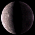
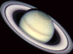

ecuatorial
al Sol (km.)
Rotación


| Planetas | Radio ecuatorial |
Distancia al Sol (km.) |
Lunas | Periodo de Rotación |
Órbita | Imagen |
|---|---|---|---|---|---|---|
| Mercurio | 2.440 km. | 57.910.000 | 0 | 58,6 dias | 87,97 dias |  |
| Venus | 6.052 km. | 108.200.000 | 0 | -243 dias | 224,7 dias | |
| La Tierra | 6.378 km. | 149.600.000 | 1 | 23,93 horas | 365,256 dias | |
| Marte | 3.397 km. | 227.940.000 | 2 | 24,62 horas | 686,98 dias | |
| Júpiter | 71.492 km. | 778.330.000 | 16 | 9,84 horas | 11,86 años | |
| Saturno | 60.268 km. | 1.429.400.000 | 18 * | 10,23 horas | 29,46 años |  |
| Urano | 25.559 km. | 2.870.990.000 | 15 | 17,9 horas | 84,01 años | |
| Neptuno | 24.746 km. | 4.504.300.000 | 8 | 16,11 horas | 164,8 años | |
| Plutón | 1.160 km. | 5.913.520.000 | 1 | -6,39 días | 248,54 años |